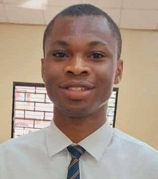

Allwell Ejike | WDD 130
Hello, my name is Allwell Ejike, and I'm absolutely thrilled to connect with you. Originally from the vibrant city of Port Harcourt, Nigeria, I've had the opportunity to broaden my horizons and pursue my passion for technology at Brigham Young University-Idaho, where I'm currently working towards my Bachelor's degree in Software Development. As a software development enthusiast, I'm fascinated by the endless possibilities that technology offers, and I'm committed to harnessing my skills to make a meaningful impact in the world. Outside of academics, I'm passionate about sports, particularly football. I'm a devoted fan of Liverpool FC and have been following their journey for years. The teamwork, strategy, and excitement of the game always leave me inspired. Music is another significant part of my life. I find solace in listening to various genres, from Afrobeats to classical, as it helps me relax and stimulate my creativity. Playing video games is also a favorite pastime, allowing me to explore new virtual worlds and challenge myself. "